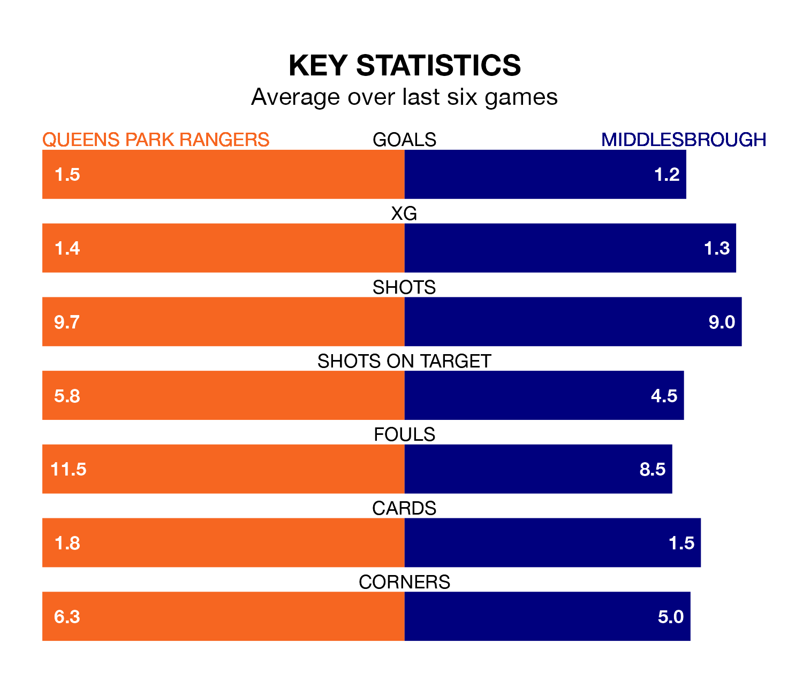

Queens Park Rangers host Middlesbrough on Saturday at Loftus Road in the EFL Championship.
In their last league match, on Wednesday, QPR drew with West Bromwich Albion 2-2 at home, with their goal scored by Sam Field (two).
Middlesbrough won, 3-1 at home against Norwich City, with Emmanuel Latte Lath, Lukas Engel and Marcus Forss on the scoresheet.
In the last 10 years, QPR and Middlesbrough have played each other on 16 occasions. QPR won seven of them, Middlesbrough six, and they drew three times.
On average, QPR scored 1.6 goals and the Boro 1.7 in those matches.
Their last meeting was on September 2, when QPR won 2-0 away.
With 36 goals in 36 games so far this season, QPR are scoring at below the league average rate with 1.0 goals per game. But they are conceding fewer than average too, letting in 48 goals at a rate of 1.3 per game.
Middlesbrough, meanwhile, are average scorers, with 1.4 goals per game. They have conceded 1.5 goals per game.
Rangers are 19th in the table after 36 games, of which they have won 10 and drawn nine, earning 39 points.
The Boro are seven places ahead of the hosts in 12th, with 14 wins and five draws putting them on 47 points.
QPR are in reasonable form in the EFL Championship, with three wins and two draws from their last six games.
With two wins and four losses over that period, the away side's form is worse – they have taken six points from 18, compared to QPR's 11.
Saturday's match will be refereed by Leigh Doughty, who has taken charge of eight EFL Championship games so far this season, issuing one red card and booking 30 players. He has not awarded any penalties.
The last QPR game Doughty refereed was a 2-1 home loss to Leicester City on October 28. He is yet to oversee a match featuring Middlesbrough this season.
Updated: 09:34 (UTC), 08/03/24